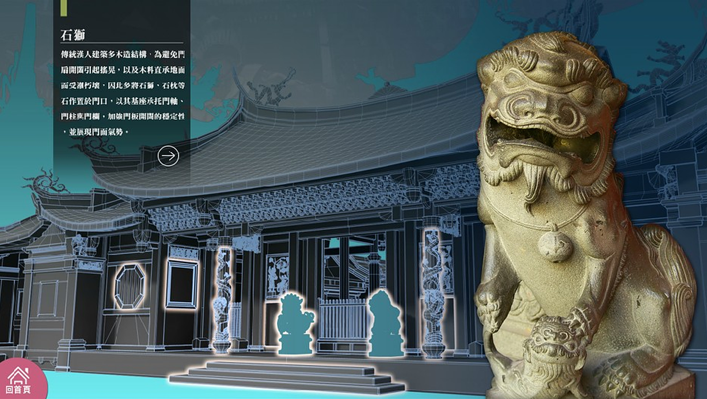
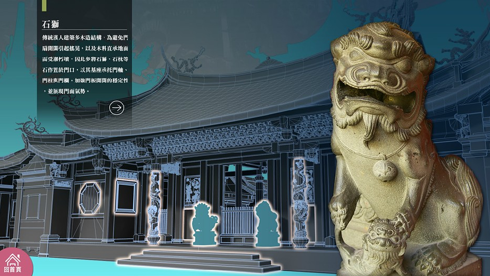

|  |
官網介紹:某個待在台北的週末早上, 室友突然想吃早午餐一類的食物, 問我要不要去一起吃 [發福廚房 Bravo Burger]... 印象中 [發福廚房] 也是台北蠻有名的美式餐廳, 而且已經有四五間分店, 其中一間就在景美, 走一小段就可以到了, 但我都還沒吃過... 當然要試試, 順便解決沒想法的早餐和午餐。 [發福廚房] 景美店就位於景美捷運站 2 號出口斜對面, 隔壁是攤鹽酥雞 (買過一次也還不錯~~) 它是個很奇妙的空間, 在外面只看得到招牌, 其實有點小隱密, 但我個人還蠻喜歡這個地點的。 走進去會感覺好像是有很多小鋪子的迷你商圈 (也許曾經是!?) 但其實就只有 [發福廚房] 而已; 中庭裡個超大的綠巨人浩克, 另外有幾張桌子也可以用餐; 主要的用餐區還是在一樓室內, 二樓我沒上去, 但似乎只有廁所而已。
|  |